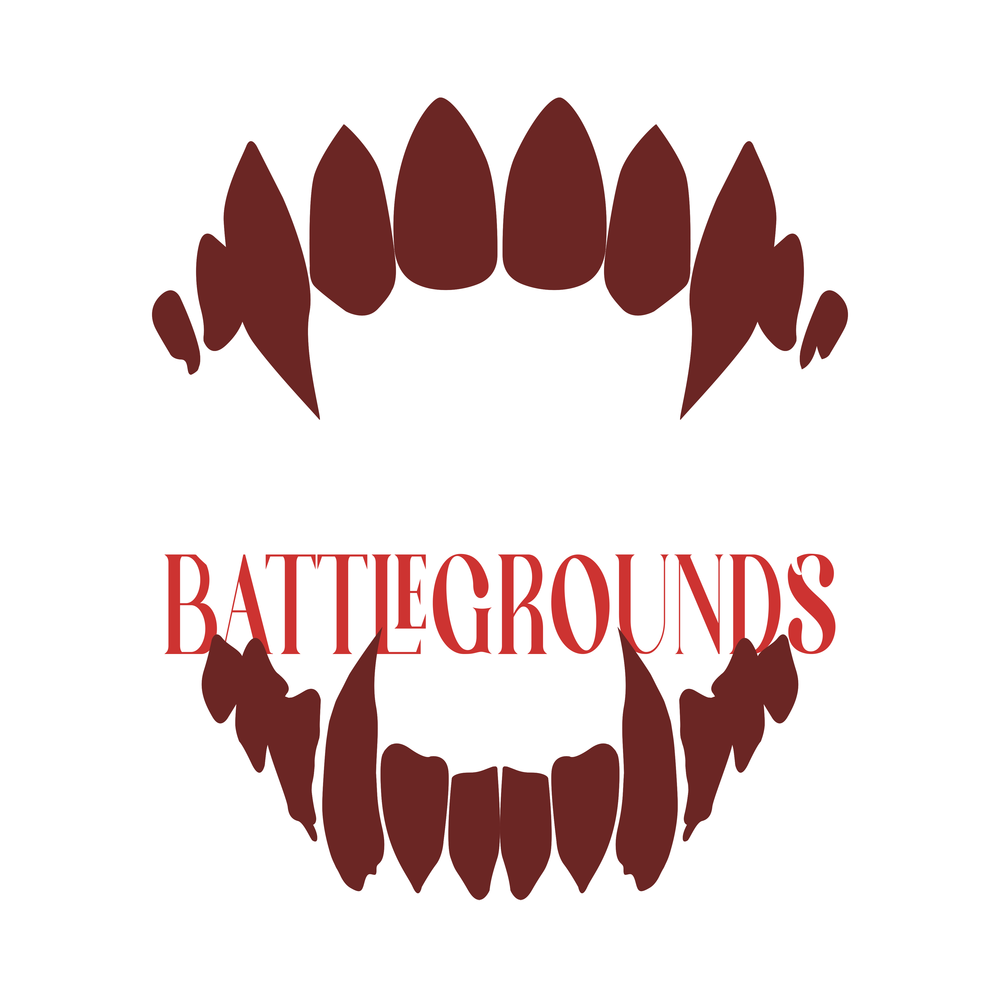
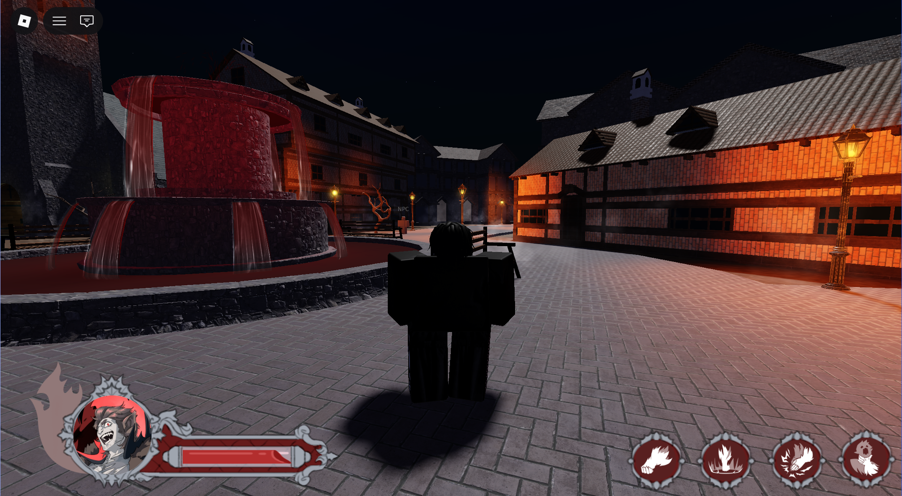

Engine
Roblox (Lua)
My Role
UX Planning & Architecture
Strategic DesignTools
Figma, Blender, After Effects
Timeline
In progress
The Mission
The main objective was to architect a user interface that remained unobtrusive during intense combat while providing vital information such as health, stamina, and ability cooldown instantly and clearly.
Note: In this project, I acted as the UI/UX Architect. While the final visual assets were produced by a dedicated artist, I was responsible for the strategic placement, visual hierarchy, and the overall functionality of every element not only in the HUD, but also in the game menus.

User Experience Strategy
To ensure player focus, I implemented a minimal HUD approach where high-priority bars are centered but transparent enough to not block the player's sight. Secondary menus were designed to be clear, allowing the user to easily navigate without friction.